Ford F-Series
Fourteenth generation (2021–present) · 2020–present
Abstract
This generation of the Ford F-Series is a full-size pickup truck, built October 12, 2020 – present in United States: Claycomo, Missouri (Kansas City Assembly); Dearborn, Michigan (Dearborn Truck Plant), Australia: Mickleham, Victoria (Ford Australia, RHD Conversion). Body styles: 2-door regular cab, 2+2-door extended cab (SuperCab), 4-door crew cab (SuperCrew). Layout: Front-engine, rear-wheel drive. Designed by Raleigh Haire (2016). This generation has its own article: Ford F-Series (fourteenth generation).


1Specifications
| Production | October 12, 2020 – present |
|---|---|
| Model years | 2021–present |
| Assembly | United States: Claycomo, Missouri (Kansas City Assembly); Dearborn, Michigan (Dearborn Truck Plant)Australia: Mickleham, Victoria (Ford Australia, RHD Conversion) |
| Designer | Raleigh Haire (2016) |
| Class | Full-size pickup truck |
| Body style | 2-door regular cab2+2-door extended cab (SuperCab)4-door crew cab (SuperCrew) |
| Layout | Front-engine, rear-wheel driveFront-engine, four-wheel drive |
| Platform | Ford T3 |
| Engine | Gasoline:2.7 L EcoBoost Nano twin-turbo V6 (2021–2026)3.0 L EcoBoost Nano twin-turbo V6 (2027–)3.5 L EcoBoost D35 twin-turbo V65.2 L Carnivore V8 (Raptor R)Flex-fuel:3.3 L Cyclone V6 (2021–2023)5.0 L Coyote V8Gasoline Hybrid:3.5 L PowerBoost twin-turbo V6Diesel:3.0 L Power Stroke turbo V6 (2021) |
| Electric motor | 35 kW BorgWarner HVH250 (hybrid) |
| Transmission | 10-speed 10R80 SelectShift automatic |
| Battery | lithium-ion (hybrid) |
| Charging | V2L: 7.2 kW (hybrid), 2 kW (petrol) |
| Wheelbase | Regular Cab: 122.8–141.5 inSuperCab: 145.4–164.1 inSuperCrew: 145.4–157.2 in |
| Length | Regular Cab: 209.1–227.7 inSuperCab: 231.7–250.3 inSuperCrew: 231.7–243.5 inRaptor: 232.6 in |
| Width | Standard: 79.9 inRaptor: 86.6 in |
| Height | Regular Cab: 75.2–77 inSuperCab: 75.5–77.2 inSuperCrew: 75.6–77.6 inTremor: 79.3 inRaptor: 79.8–80.7 in |
| Weight | ≥ 4021 lb |
| Also called | Ford Lobo (Mexico) |
| Related | Ford Super Duty (P708)Ford F-150 Lightning |
| Predecessor | Ford F-Series (thirteenth generation) |
2Versions
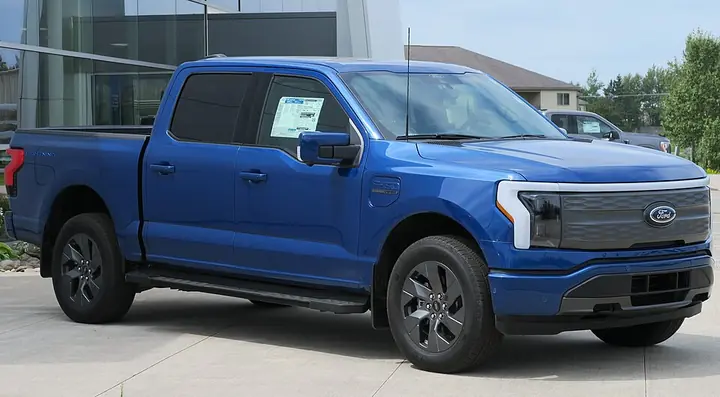

- Hybrid
- Raptor
- Updates (facelift)
- 2024 refresh (facelift)
- Australian export
- "Rocket League" Edition
3Previous generations
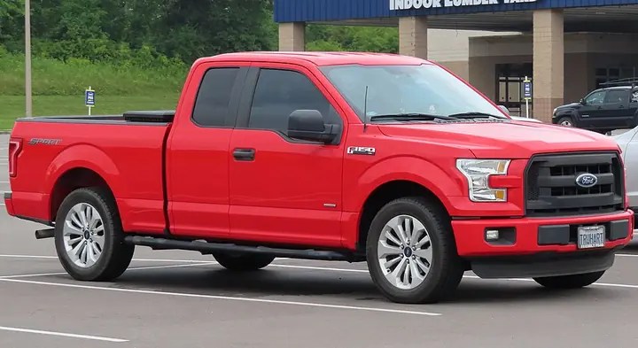

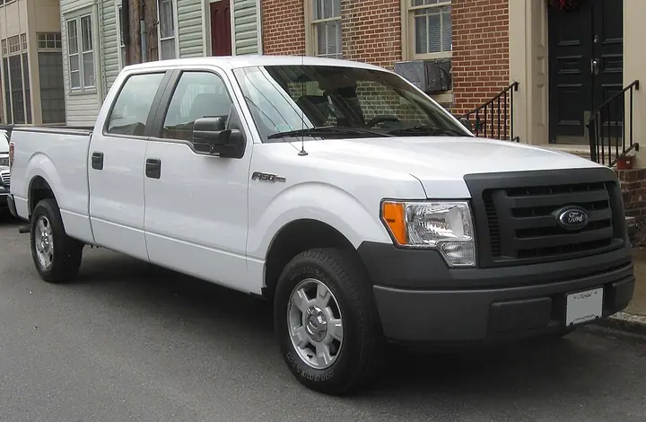

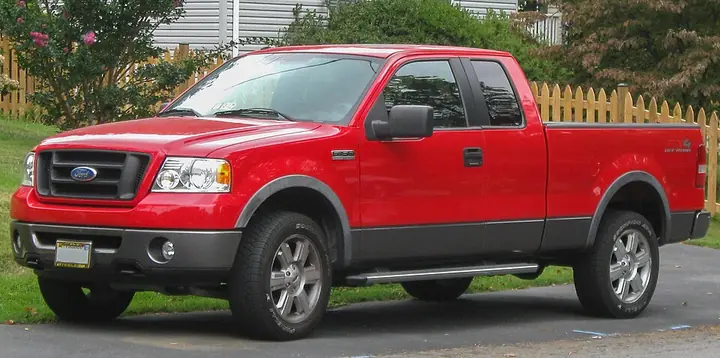

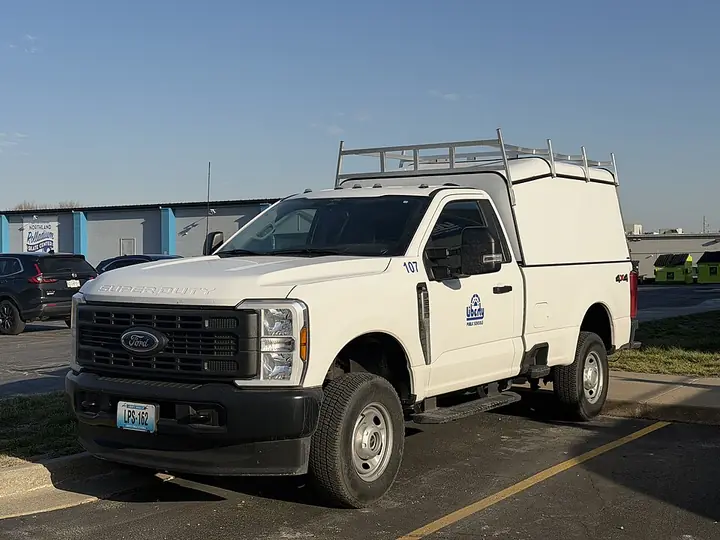

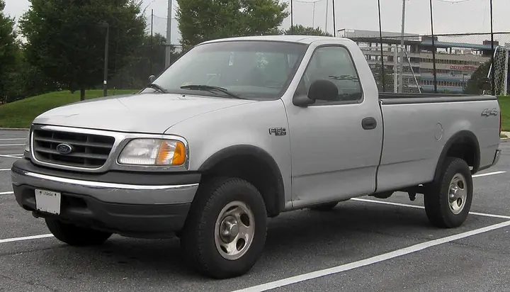

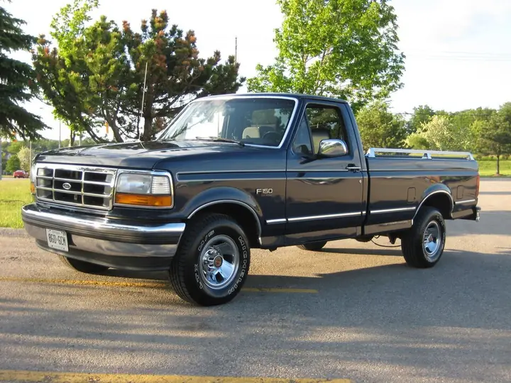

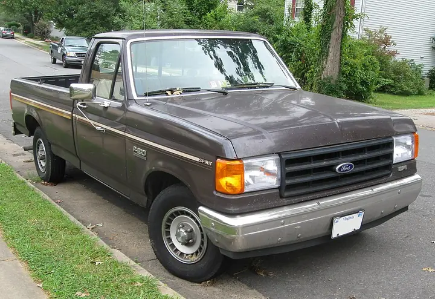

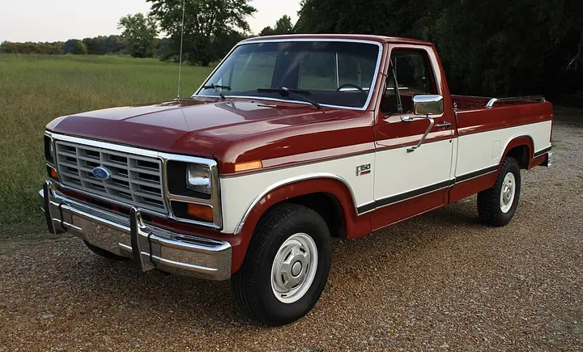

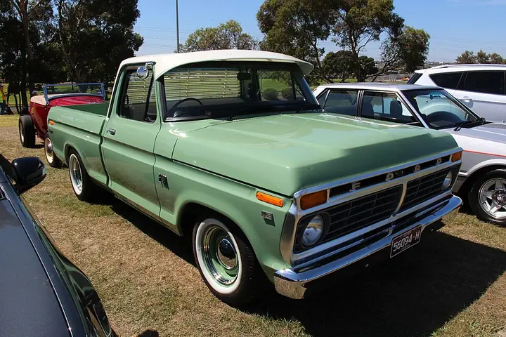
.jpg){kind=link}
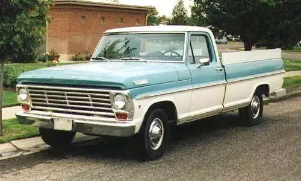

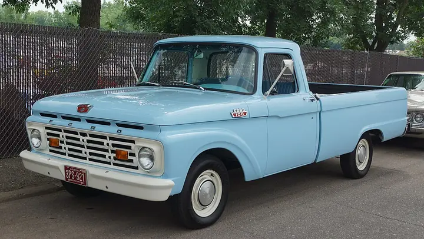

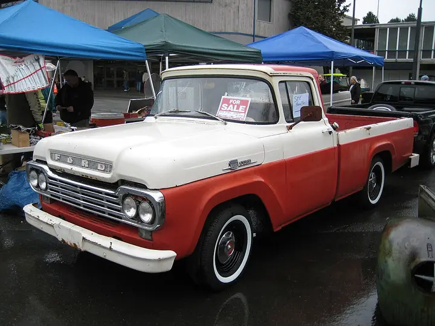

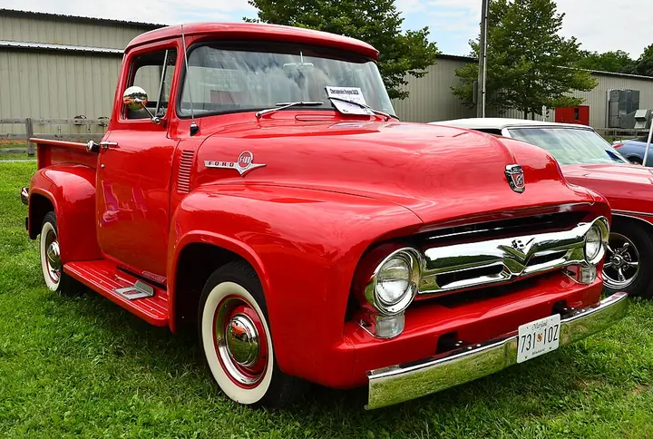
.jpg){kind=link}
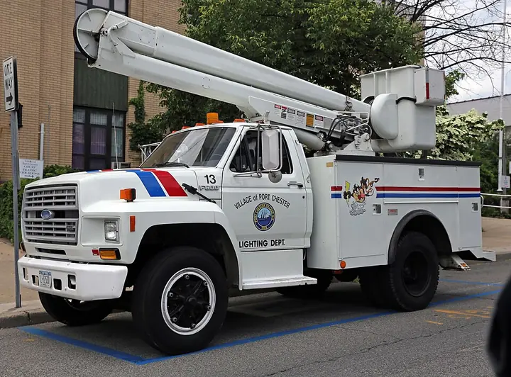

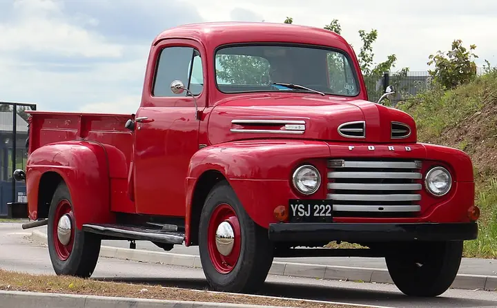

4Generation by generation
Length +11% from the first to the last